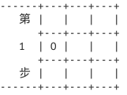

2. 计算机循环下棋¶
2.1 实现下棋功能¶
怎么样把棋子下到棋盘里呢？我用大写字母 X 和 O 表示棋子，也是就是跟如图 1.2 一样：
我想要把 | | | | 里的空白换成 X 和 O 不就相当于下棋了嘛。所以把空白的地方换成一个变量，下棋时给这个变量赋值，没下棋时保持空白状态。棋盘里有 9 个空白，可以使用数组来代替它们。
string mark[3][3] ; // 定义存放棋子的数组 mark
for (int x = 0; x < 3; ++x) // 初始化棋子为空字符串（3个空格）
{
for (int y = 0; y <3; ++y)
{
mark[x][y] = " ";
}
}
然后把这些数组输出，之前 | | | | 是存储在 bar 的变量里的。因为现在每一行都是不一样的，也就是需要 3 个不同的 bar 变量，那么用 bar[3] 数组表示棋盘的三个行，bar[0]、bar[1]、bar[2] 。
string bar[3] ;
for (int x = 0; x < 3; ++x)
{
bar[x] = '|' + mark[x][0] + '|' + mark[x][1] + '|' + mark[x][2] + '|' ;
}
2.2 随机下棋¶
棋盘下棋的 9 个位置用 mark[3][3]数组表示，如果给 x 和 y 随机赋值，那么 mark[x][y] 就表示随机下棋的位置，这样就实现了计算机随机下棋的功能。
#include <cstdlib>
#include <ctime>
#define random(x) (rand()%x)
srand(time(0)); // 改变随机种子值
int x = random(3), y = random(3); // 随机生成坐标值
2.3 计算机交替下棋¶
-1 的幂为偶数是 1，奇数时为 -1 ，利用这个特性实现计算机交替。
#include <cmath> // 使用 pow() 这个幂函数需要这个头文件
// 定义一个计数器 b，交替赋值棋子 X 和 O
int b = pow(-1, i);
if (b == -1)
mark[x][y] = " X ";
else
mark[x][y] = " O ";
2.4 循环输出下棋的每一步¶
棋盘有 9 个空，那么最多需要下 9 步，也就是循环 9 次。
2.5 判断棋盘存在棋子¶
由于计算机是随机下棋的，免不了会把棋子下到已经下过棋的位置，覆盖原有的棋子。为了解决这个问题，需要判断棋盘是否已经存在棋子。实现思路是，把随机生成的 mark[x][y] 比较，如果不为空字符串（三个空格的初始值），也就是存在棋子了，那么就再次随机给 x 和 y 赋值，直到 mark[x][y] 为空字符串，也就是不存在棋子，代码如下：
while (mark[x][y] != " ") // 判断棋盘是否已经存在这个棋子
{
x = random(3);
y = random(3);
}
现在把上面提到的串起来，看下是否能让代码运行起来：
#include <iostream>
#include <string>
#include <cstdlib>
#include <ctime>
#include <cmath>
#define random(x) (rand()%x)
using namespace std;
int main()
{
// 定义棋盘 board
// 分别存储在 boundary（边界）,以及 sidebar（边栏）的变量里
string boundary = "+---+---+---+";
string sidebar(6, ' '); //空白的左边栏
string mark[3][3] ; // 定义棋子标记 mark
for (int x = 0; x < 3; ++x) // 初始化棋子为空字符串
{
for (int y = 0; y <3; ++y)
{
mark[x][y] = " ";
}
}
srand(time(0)); // 改变随机种子值
for (int i = 0; i < 9; ++i)
{
int x = random(3), y = random(3); // 随机生成坐标值
while (mark[x][y] != " ") // 判断棋盘是否已经存在这个棋子
{
x = random(3);
y = random(3);
}
// 定义一个计数器 b，交替赋值棋子 X 和 O
int b = pow(-1, i);
if (b == -1)
mark[x][y] = " X ";
else
mark[x][y] = " O ";
string bar[3] ; // 定义输出的行
for (int x = 0; x < 3; ++x)
{
bar[x] = '|' + mark[x][0] + '|' + mark[x][1] + '|' + mark[x][2] + '|' ;
}
// 输出界面
cout << sidebar << boundary << endl;
cout << sidebar << bar[0] << endl;
cout << sidebar << boundary << endl;
cout << sidebar << bar[1] << endl;
cout << sidebar << boundary << endl;
cout << sidebar << bar[2] << endl;
cout << sidebar << boundary << endl;
}
return 0;
}
2.6 判断输赢¶
定义布尔值变量 win ，并初始值为 false （本来一开始就是没赢嘛）。如果 win 为 true 则跳出循环，输出赢的信息。
判断交叉线。交叉线有个两条，一条``mark[0][0]``、mark [1][1]```mark[2][2]，另一条是 mark[0][2] 、mark [1][1]、mark[2][0]，那么判断这两条交叉线是否都等于棋子 O 或者 X ，是的话则赋值 true 给变量 win 。
判断横竖线。横竖线分别有三条，三条横线的表示为（x 取值为 0～2）：mark[x][0]、mark[x][1]、mark[x][2]，三条竖线的表示为：mark[0][x]`、mark[1][x]、mark[2][x]。同样地，需要判断是否都等于棋子 O 或者 X。是的话则赋值 true 给变量 win 。
// 判断输赢
bool win = false;
// 判断交叉线是否相等
if (mark[0][0] == " O " && mark [1][1] == " O " && mark[2][2] == " O " ) win = true;
if (mark[0][0] == " X " && mark [1][1] == " X " && mark[2][2] == " X " ) win = true;
if (mark[0][2] == " O " && mark [1][1] == " O " && mark[2][0] == " O " ) win = true;
if (mark[0][2] == " X " && mark [1][1] == " X " && mark[2][0] == " X " ) win = true;
// 判断行、列是否相等
for (int x = 0; x < 3; ++x)
{
if (mark[x][0] == " O " && mark[x][1] == " O " && mark[x][2] == " O " ) win = true;
if (mark[x][0] == " X " && mark[x][1] == " X " && mark[x][2] == " X " ) win = true;
if (mark[0][x] == " O " && mark[1][x] == " O " && mark[2][x] == " O " ) win = true;
if (mark[0][x] == " X " && mark[1][x] == " X " && mark[2][x] == " X " ) win = true;
}
if (win) break;
完整代码位于 doc/sample/2.1.cpp
2.7 改善界面¶
左边空白栏上下边界增加了分割线 ------，把这个分割线存储在 split_line 变量里。左边栏显示第几步，用 step 变量作为计数器，放在 for 循环里，代码实现如下：
//此处省略几行代码 ...
string split_line(6, '-');// 定义分割线
//此处省略几行代码 ...
for (int i = 0; i < 9; ++i)
{
step = i + 1;
//此处省略几行代码...
cout << split_line << boundary << endl;
cout << " 第 " << bar[0] << endl;
cout << sidebar << boundary << endl;
cout << " " << step << " " << bar[1] << endl;
cout << sidebar << boundary << endl;
cout << " 步 " << bar[2] << endl;
cout << split_line << boundary << endl;
}